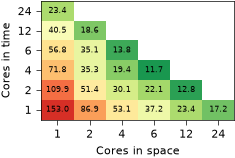
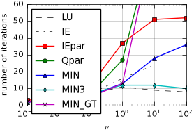
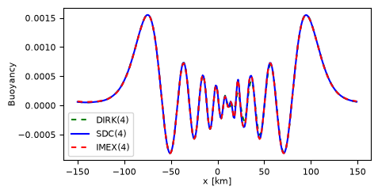
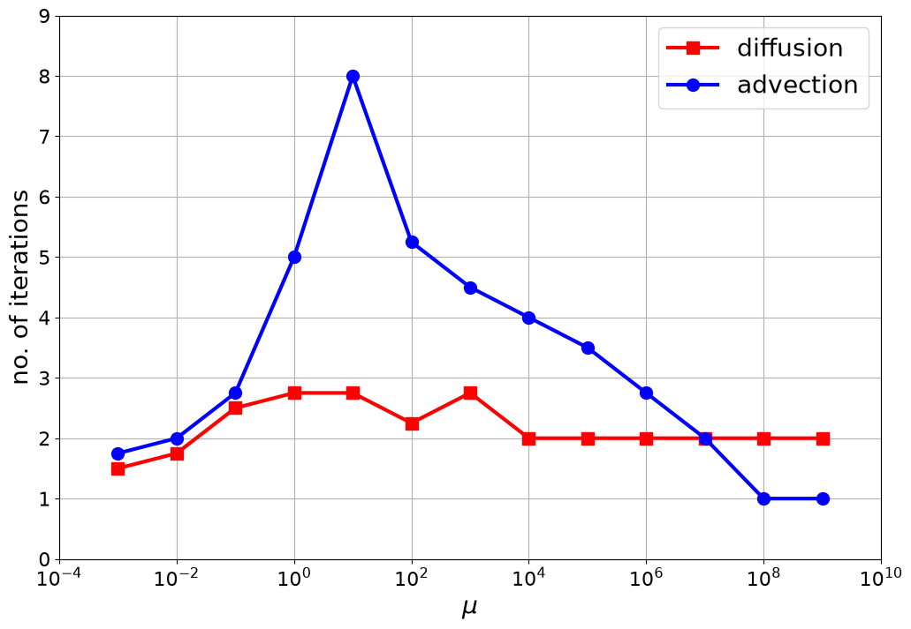
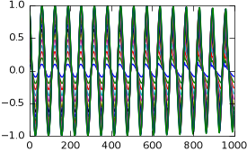
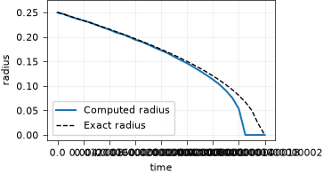
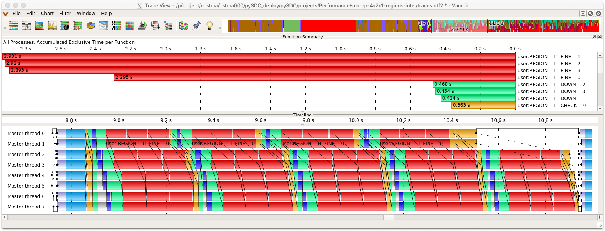
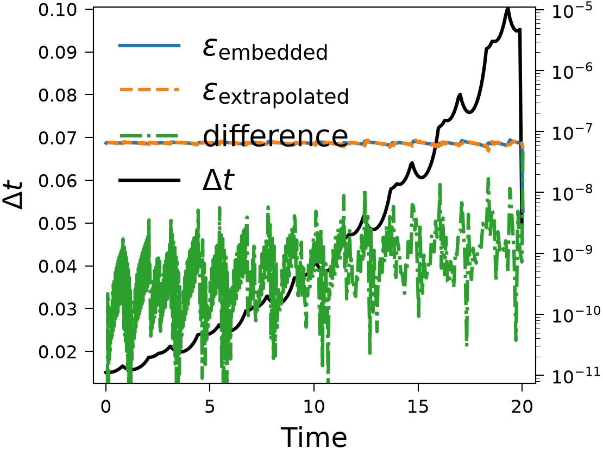
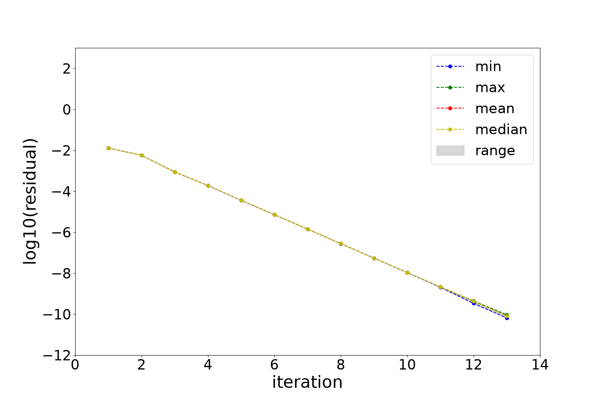

Projects#
Projects are research done with pySDC: the code behind papers, theses and studies, kept in this repository so that
the results stay reproducible. Each project has its own folder in pySDC/projects, with a README that explains
what it does and how to run it, and usually an environment file with what it needs.
All projects except Performance, which holds trace files, and those in deprecated are tested with every change to pySDC, so their code keeps
working with the current version. Where the tests make plots, the pages show them as the latest run made them.
To add your own, see Adding a project.
Methods and analysis#

SDC variants for the Allen-Cahn equation, and space-time parallel heat equation runs with PETSc, from ACM TOMS.

Strategies to parallelize SDC across the collocation nodes, within each iteration.
def getCost(counters):
nNewton, nRHS, tComp = counters
return 2 * nNewton + nRHS
minPrec = ["MIN-SR-NS", "MIN-SR-S", "MIN-SR-FLEX"]
symList = ['^', '>', '<', 'o', 's', '*', 'p']
config = [
(*minPrec, "VDHS", "ESDIRK43", "LU"),
]
The numerical experiments of the paper on parallel SDC by Čaklović, Lunet, Götschel and Ruprecht.

Semi-implicit SDC for fast waves, compared with RK-IMEX and DIRK schemes, and its stability.
for k in range(0, n + 1):
ji = max(k - d, 0)
jf = min(k, n - d)
sumcoeff = []
for i in range(ji, jf + 1):
prodterm = []
for j in range(i, i + d + 1):
if j == k:
prodterm.append(1)
else:
prodterm.append(self.nodes[k] - self.nodes[j])
product = 1.0 / np.prod(prodterm)
sumcoeff.append((-1) ** (i - 1) * product)
y = sorted(sumcoeff, key=abs)
w[k] = np.sum(y)
The RDC method of Güttel and Klein, with equidistant nodes and a blended barycentric interpolant.

How PFASST converges for linear problems, in the stiff and in the non-stiff limit.
Working with diffusion setup and parameter 1.0e-02..
Iteration counts for matrix-based version: [(0.0, 3), (0.25, 3), (0.5, 3), (0.75, 3)]
Error (mat/prop) vs. exact solution: 3.2542e-06 -- 3.2542e-06
PFASST for linear problems, written as a two-grid method and as a propagation matrix.
# Define Collocation matrix to find for the stability function
Q = L.sweep.coll.Qmat[1:, 1:]
QQ = np.dot(Q, Q)
Q_coll = np.block([[QQ, np.zeros([num_nodes, num_nodes])], [np.zeros([num_nodes, num_nodes]), Q]])
qQ = np.dot(L.sweep.coll.weights, Q)
# Matrix with all entries 1
ones = np.block([[np.ones(num_nodes), np.zeros(num_nodes)], [np.zeros(num_nodes), np.ones(num_nodes)]])
# Combine all of the weights into a single matrix
q_mat = np.block(
[
[dt**2 * qQ, np.zeros(num_nodes)],
[np.zeros(num_nodes), dt * L.sweep.coll.weights],
]
)
The figures of the paper by Akramov, Götschel, Minion, Ruprecht and Speck.

The harmonic oscillator, Hénon-Heiles, Fermi-Pasta-Ulam-Tsingou and the solar system.

Fully, semi- and multi-implicit SDC with PETSc, for the Fisher and the Gray-Scott equations.
# do the sweep
for m in range(1, M + 1):
# add the known components from current sweep del_t*Q_del*U_k+1
u_approx = P.dtype_u(integral[m - 1])
for j in range(1, m):
u_approx += L.dt * self.QI[m, j] * L.f[j]
# update gradient (recall L.f is being used to store the gradient)
L.f[m] = P.solve_system(
self.F, u_approx, L.dt * self.QI[m, m], L.f[m], L.time + L.dt * self.coll.nodes[m - 1]
)
# Update solution approximation
integral = self.integrate()
for m in range(M):
L.u[m + 1] = L.u[0] + integral[m]
Sweepers, problems and scripts for solving differential-algebraic equations with SDC.
Applications#

Allen-Cahn-type problems from materials science, for correctness, parallelization and benchmarks.

Components of DC microgrids and a battery, with switches, and an estimator that restarts SDC at the events.

Exponential SDC for the monodomain equation of cardiac electrophysiology.
desc['sweeper_params']['quad_type'] = 'RADAU-RIGHT'
desc['sweeper_params']['num_nodes'] = 2
desc['sweeper_params']['QI'] = 'MIN-SR-S'
desc['sweeper_params']['QE'] = 'PIC'
res = 64 if res == -1 else res
desc['problem_params']['Rayleigh'] = 1e8
desc['problem_params']['nx'] = self.res_ratio * res
desc['problem_params']['ny'] = self.res_ratio * res
desc['problem_params']['nz'] = res
desc['problem_params']['Lx'] = self.gamma
desc['problem_params']['Ly'] = self.gamma
desc['problem_params']['Lz'] = 1
desc['problem_params']['heterogeneous'] = True
desc['problem_params']['dealiasing'] = self.dealiasing
3D convection with spectral methods, SDC and Runge-Kutta, from CPUs to large GPU runs.
F = df.dot(u, self.v) * df.dx
F += self.factor * df.dot(df.dot(u, df.nabla_grad(u)), self.v) * df.dx
F += self.factor * self.nu * df.inner(df.nabla_grad(u), df.nabla_grad(self.v)) * df.dx
F -= self.factor * df.dot(p, df.div(self.v)) * df.dx
F -= self.factor * df.dot(self.g_h, self.v) * df.dx
F -= self.factor * df.dot(df.div(u), self.q) * df.dx
self.step = NewtonStep(F, df.derivative(F, self.w))
SDC with FEniCS for heat, convection-diffusion and incompressible Navier-Stokes flows.
High-performance computing#

Space-time parallel runs traced with Score-P and Vampir, to understand their parallel performance.

Adaptivity and Hot Rod against bit flips, e.g. from radiation, and fault statistics.

Bit flips injected into SDC sweeps, a detector for them, and its statistics over 500 runs.

Compressing the data SDC keeps at the collocation nodes, and what it costs in accuracy.
# change description dictionary for GPU problem
description['problem_class'] = heatNd_forced
description['problem_params'] = dict(description['problem_params'], useGPU=True)
# instantiate controller gpu
controller = controller_nonMPI(num_procs=1, controller_params=controller_params, description=description)
# get initial values on finest level gpu
P = controller.MS[0].levels[0].prob
uinit = P.u_exact(t0)
# call main function to get things done on gpu...
uend_gpu, stats_gpu = controller.run(u0=uinit, t0=t0, Tend=Tend)
timing_gpu = sort_stats(filter_stats(stats_gpu, type='timing_run'), sortby='time')
print('Runtime GPU:', timing_gpu[0][1])
assert abs(uend_gpu.get() - uend_cpu) < 1e-13, abs(uend_gpu.get() - uend_cpu)
Running pySDC on GPUs with CuPy, up to large problems, and the plots of Thomas Baumann’s thesis.
Playgrounds#
This folder gathers various small to medium experiments done with pySDC. They are for example grouped by application (e.g. Boris) or by problem type (e.g. ODEs).
Also, the deprecated folder lists a few old applications which have not been ported to the current version of pySDC.
Experiments which become more complex or which eventually evolve into a publication of any form should go to the projects folder and should receive proper documentation and description.
The playground codes are supposed to be cleaned up, but there is no detailed documentation available.